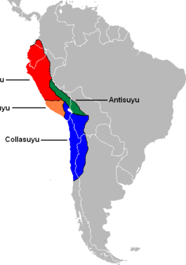
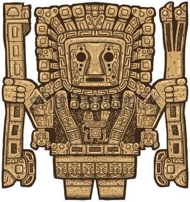
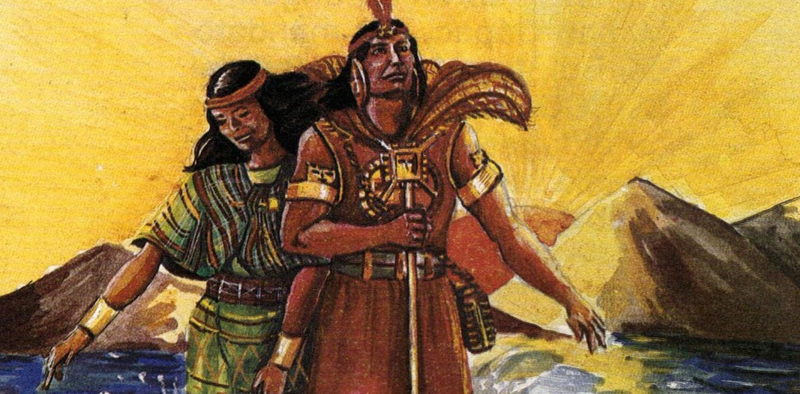
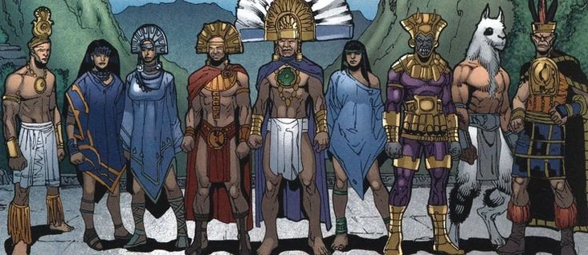
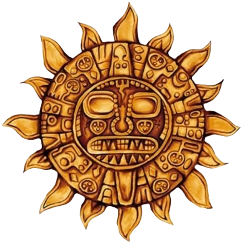

Inca mythology is a collection of legends and beliefs explaining the creation of the cosmos and the founding of the Inca Empire (known as Tahuantinsuyu, or "four parts together"), which was the largest state in pre-Columbian America. Centered in Cusco, Peru, it expanded across the Andes to dominate parts of present-day Ecuador, Bolivia, Chile, Argentina, and Colombia; however, the civilization fell in 1533 following the invasion led by the Spaniard Francisco Pizarro.
Inca mythology was polytheistic and based on the worship of natural elements. Its myths organized society into three worlds: the upper world (Hanan Pacha), the earthly realm (Kay Pacha), and the underworld (Uku Pacha). This belief justified the absolute power of the emperor (Sapa Inca)—viewed, like the pharaohs, as a direct descendant of the gods—as the Sapa Inca was considered the living embodiment of Inti on Earth.
Creation of the universe

They believe that the universe was created by the supreme god Viracocha, who emerged from the waters of Lake Titicaca to begin his work of creation; in his first attempt, Viracocha created a world of total darkness inhabited by a race of giants. These creatures disobeyed the god and were punished, either being turned into stone or destroyed by a great flood.
After the flood, Viracocha molded a new human race in his own image using clay. He painted different nations and groups, giving them their clothing, languages, and customs. To illuminate this new world, Viracocha commanded the Sun (Inti), the Moon (Mama Quilla), and the stars to rise into the heavens from the Island of the Sun and the Island of the Moon in Lake Titicaca.

With the world established, Viracocha sent his children, Manco Cápac and Mama Ocllo, to the Cusco region. Armed with a golden staff, they founded the city of Cusco and taught the Inca people about agriculture, weaving, and government.
Gods


Viracocha: creator of the universe
Inti: god of the sun
Pachamama: Mother Earth
Mama Killa: goddess of the moon
Illapa: god of lightning and storms
Mama Cocha: goddess of the sea and waters
Supay: the lord of the Inca underworld
How this reaches us
Inca mythology and culture have captured the imagination of pop culture thanks to legends of hidden treasures, monumental structures like Machu Picchu, and the cosmological trilogy (the Condor, the Puma, and the Serpent). Furthermore, the fascination with the Spanish conquest and the mystery surrounding Inca gold serve as constant drivers for adventure.
Examples of famous works that use this mythology as a reference are Indiana Jones, The Emperor's New Groove, JoJo's Bizarre Adventure, Bleach, etc.